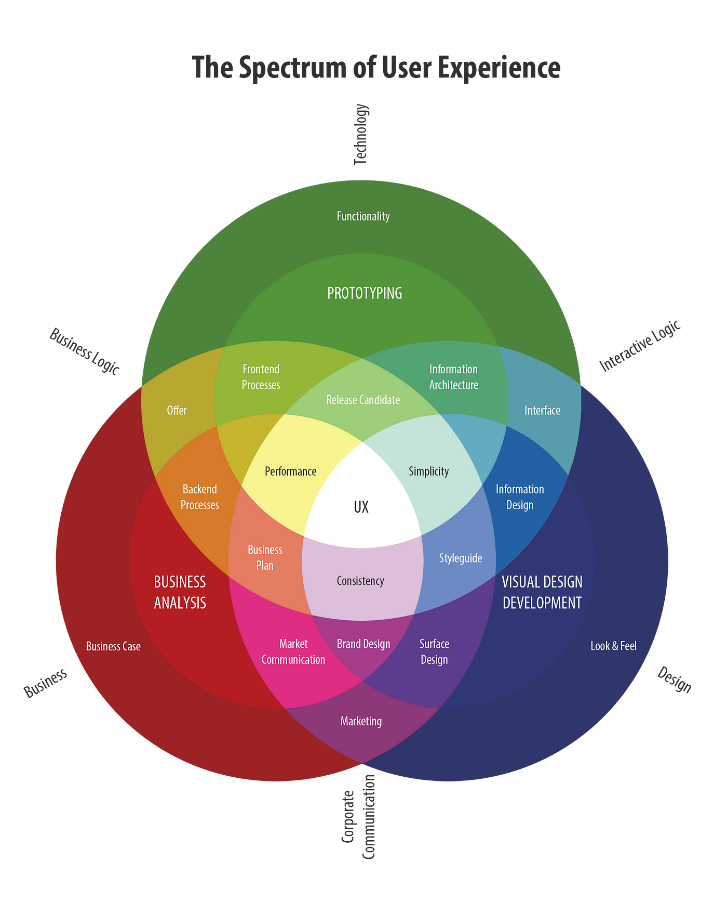

User experience is the understanding of a user who could be interacting with your product, system, or service. UX Designers work to create the most efficient and easily understandable “things” that anyone can interact with. That is the simplest explanation I was able to produce based on my experience and my education in the field. UX Designers have a variety of insights that are highly valuable if they are properly utilized. Three points that are important to bring to light are: UX designers are often in a behind-the-scenes role that does not generally get credit for the experiences they help craft; the diverse experience and knowledge UX designers have; and the importance of accessibility in UX design.
It has always been the case that people are more likely to leave a negative review because of a poor experience than leave a good review because of a positive experience. The same concept really applies to user experience. When you pick up a device and can use a software without struggling and can easily access everything you are trying to do, you are not going to state that this software has such great UX. Many consumers will end up feeling neutral about good design, particularly when it comes to app design / UI. On the other hand, if someone has an unpleasant experience in which it's hard to complete a task or the product does not look great, people will be more likely to talk about how horrible the experience was. If a UX designer did their job correctly, their job will often be unnoticed by the general public and that is just how it is at this point in time. Great UX will allow people to interact with the product with no issues and allow people to be able to continue with their day without having to put any extra thought into this product.
There are a lot of companies out there that are low in UX maturity. This graphic highlights the diversity of things UX encompasses which can be an important thing to show to people when trying to explain how User Experience fits into the workplace. Sometimes it is an uphill battle, but the reward of utilizing great UX will very quickly show how valuable it is to a company.
https://ia.net/topics/the-spectrum-of-user-experience-1
The other large part of User Experience is accessibility. Employees in the workplace and people in general get used to their own experience of the world and usually assume others will have a similar experience, similar understanding, and similar knowledge about things that they have, which leaves a gap in accessibility for certain groups of users. This can be as simple as someone who has used a particular software for years and therefore assumes it is easy to use because they are familiar with how to use the product. Another example is when someone has a vision impairment and is unable to use a particular software the way that most users do, or it makes it extremely difficult to use the product. There are lots of people who need to be thought about and good UX designers will make it their mission to consider a variety of types of users and have their designs made with all the users in mind not just one perspective.
At the end of the day, we should all help bring awareness to what User Experience is and how it impacts the world around us. If we have more awareness to the importance of UX Design, many companies will be more likely to consult with UX professionals when making important decisions. This will bring forth better decisions because the UX designer will help bring attention to all of the user's needs and how it will impact the end-to-end experience. This will lead to an overall better experience for the employer, the employees, and the users.